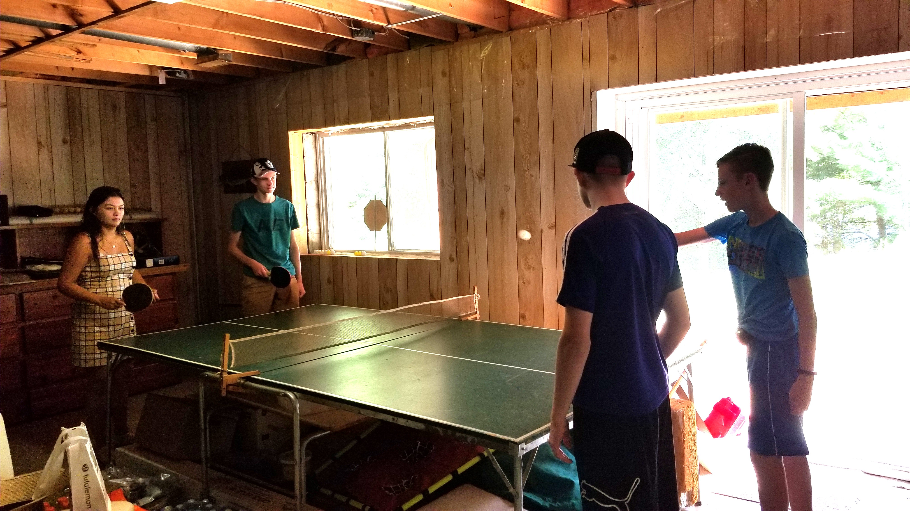
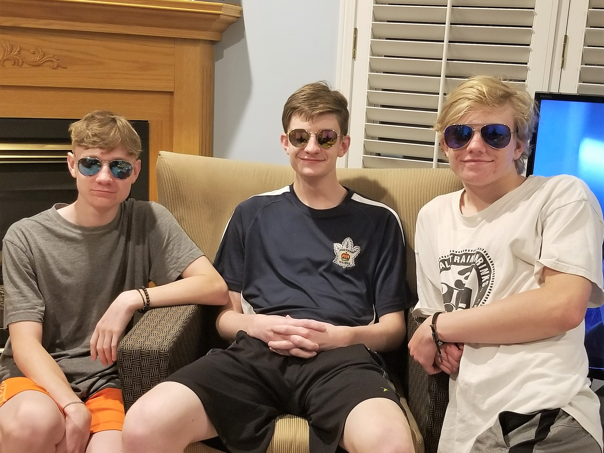

<!DOCTYPE html>
<html lang="en"></html>
    <head>
        <meta charset="UTF-8">
        <meta name="viewport" content="width=device-width, initial-scale=1.0">
        <title>About Me</title>
        <link rel="stylesheet" href="webstyle.css" />
    </head>
    <body>
        <nav>
            <a href="home.html">Home</a>
            <a href="one.html">About</a>
            <a href="two.html">Projects</a>
            <a href="three.html">Experience</a>
            <a href="four.html">Hobbies</a>
        </nav>

        <figure style="float: center; text-align: center; margin-top: 30px;"></figure>
            
            <figcaption style="color: white; font-size: 18px; margin-top: 5px;">
                <!-- caption here -->
            </figcaption>
        </figure> 

        <div class="slider">
            <span style = "--i:1"></span>
            <span style = "--i:2"></span>
            <span style = "--i:3"></span>
        </div>

        <h1>Introduction</h1>
        <h2><p>Hi, I’m Benjamin Probert, a Computer Science student at the University of Guelph, minoring in Mathematics. 
          With a passion for technology and problem-solving, I’ve built a strong foundation in programming, data structures, 
          and discrete mathematics.</p></h2>
          why major
          what skills
          what i want to do
          goals academic and personally
        <footer>
            <p>&copy; 2025 Benjamin Probert. All Rights Reserved.</p>
            <nav>
                <a href="one.html">About</a> |
                <a href="https://www.linkedin.com/in/benjamin-probert/" target="_blank">LinkedIn</a> |
                <a href="https://github.com/Benguin25" target="_blank">GitHub</a> |
                <a href="404.html">Error 404 Page - just for fun :)</a>
            </nav>
        </footer>
    </body>
</html>